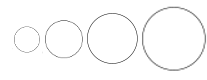

Gure Esku Dagoren herri galdeketen emaitzak
Botoak
Herriak


Asier Iturralde Sarasola @aldatsa
Datu geografikoak: Euskalgeon oinarrituta
Biztanleria datuak: datuak.net (2016)
Pasa sagua herrien gainetik xehetasunak bistaratzeko.
| Alde | |
| Aurka | |
| Galdeketa iragarrita | |
| Erabakitzeke |
| Alde | |
| Aurka | |
| Galdeketa iragarrita | |
| Erabakitzeke |

Zirkuluen diametroak udalerrien biztanleriarekiko proportzionalak dira
Biztanleria vs partehartzea
Hainbatek aipatu bezala herri txikietan partehartzea askoz handiagoa izan da herri handietan baino. Grafikoan garbi ikusten da joera. Hala ere, badira salbuespenak, adibidez, Olaberrian partehartzea antzerako herrietan baino nabarmen txikiagoa izan da.
Biztanleria vs baiezkoen ehunekoa
Baiezko botoen portzentaia altua da herri guztietan eta ez dago desberdintasun nabarmenik herri txiki eta handien artean.
Biztanleria vs ezezkoen ehunekoa
Ezezko botoen portzentaia baxua da herri guztietan eta ez dago desberdintasun nabarmenik herri txiki eta handien artean.
Langabezia tasa vs partehartzea
Borroka garaia da blogeko artikulu batean langabezia tasa aipatzen da partehartzean eragina izan duten faktoreen artean. Grafikoan ikusten denez langabezia tasa handitu ahala partehartzea txikiagotzeko joera dago. Eskuinaldean nabarmentzen diren 2 herriak Arrankudiaga eta Etxarri-Aranatzen dira, kasu horietan 2014ko datuak erabili ditugu, urte horretan egin baitziren galdeketa horiek.
Euskara gaitasuna vs partehartzea
Aztertutako erlazio guztietatik korrelazio handiena duena euskara gaitasunaren eta partehartzearen artekoa da (r² = 0.67). Herria gero eta euskaldunagoa partehartzea orduan eta handiagoa da. Joera orokorraren salbuespena Arrankudiaga da, bertan partehartzea antzeko euskara gaitasuna duten herrietan baino nabarmen handiagoa izan baitzen.
Emaitzak herriz herri
| Udalerria | Hautesleak | Botoak | Partehartzea | Bai | % | Ez | % | Zuriak | % | Baliogabeak | % |
|---|